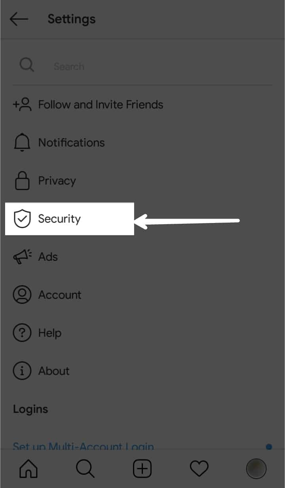

Check and Remove Pending Follow Request on Instagram

Instagram allows to set the profile as Private which means only their follower can see the posts shared by the private account. You might have sent follow request to multiple number private accounts long time ago and the follow request might be still in pending mode. Now, you need to see those names who haven't approved your follow request yet.
If you can't remember all the usernames of all the accounts you have requested to follow. Or, if you remember the name also, you may not find the account since they might have changed their username. So, for that there is a feature provided by Instagram to see the list of accounts in the current pending follow request.
To see the current pending follow request, follow the steps below:
- Login to Instagram from Instagram Mobile App or instagram.com from your Browser.
- Open your Instagram profile and click on the hamburger icon at the top.
If you are using Instagram on browser, press the settings icon on your profile and jump to Step 4.
- For Instagram Mobile app users:
Click on Settings.
- Click on Security.
 - Click on Access Data under Data and History.

- On Account Data page, Scroll down to find Current follow requests under Connections heading. Click on View All option.

- Under Current follow requests you can see the username of all accounts whom you have requested to follow but they haven't approved/ deleted your follow request yet. All the names you see there are the ones who haven't approved/ deleted your follow request. You can't see the names which have already approved/ deleted your follow request.
You can directly jump to this page on through your browser by clicking this link.
- To cancel the pending follow requests, select the username/s of whom you want to cancel the follow request.
If you are using Instagram Mobile app, press the three dots on top right corner. Or, if you are using browser, you can directly copy the selected username/s.
- For Instagram Mobile app users:
After pressing the three dots on the top right corner, you can see these options. Press Copy to copy the selected username.
- Now return back to Search page and paste the username you have copied from the list. If you have copied more than one username, paste them one by one and proceed to next steps. After you paste the username, you can see the account whom you have requested to follow and you are not approved by them yet. Try to match the username if there are multiple accounts with similar username.

- After you find the exact account, open the account. You can see Requested button. Click on that button to cancel the follow request.

- After following all the above steps, you have successfully canceled the pending follow request you have sent. If you have multiple accounts in the list, you can repeat the process until you finish canceling all the pending follow request you want.
Conclusion
By following all the above steps, you will be able to cancel all the pending follow requests you have sent on Instagram.